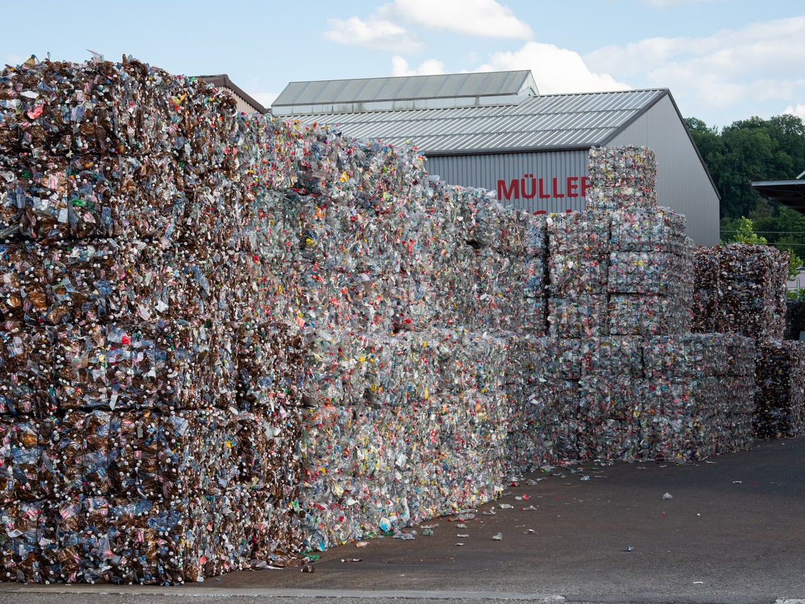
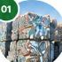
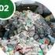
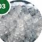
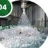
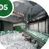
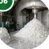
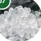
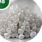
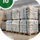

At PolyRevive, we follow a structured and responsible PET recycling process to transform post-consumer PET waste into high-quality recycled flakes and pellets, contributing to a cleaner environment and a stronger circular economy.

We follow a complete and controlled recycling value chain to ensure high-quality recycled materials, efficient operations, and minimal environmental impact.

PET bottles and recyclable PET waste are sourced through collection networks and material suppliers.

Collected material is sorted to separate PET from non-PET materials and unwanted contaminants.

Sorted PET bottles are processed through specialized machinery to reduce them into manageable flakes.

The PET flakes undergo washing and cleaning processes to remove dirt, labels, adhesives, and other contaminants.

Different materials are separated to improve the purity and consistency of the recycled PET stream.

Processed PET flakes are dried to achieve the required moisture level for further processing.

Clean and processed PET is converted into high-quality recycled PET flakes for various applications.

Where required, processed PET flakes can be further converted into recycled PET pellets for industrial applications.
Material is inspected and evaluated for quality, consistency, contamination, and application requirements.

Recycled PET flakes and pellets are supplied to industrial customers across various sectors.
At PolyRevive, technology is an important part of our approach to building a reliable recycling operation.
Every step in our recycling process contributes to a healthier environment, conserved resources, and a more sustainable future.
Partner With Us